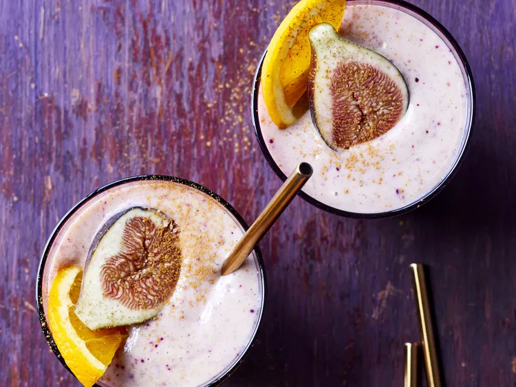

Fig Smoothie
Description
The sticky texture of figs turns this smoothie into a thick and delicious drink for fig lovers (or anyone who needs to use this perishable fruit fast)!
Ingredients
- 2 frozen bananas, peeled and chopped
- 6 fresh figs, halved
- ¾ cup milk
- ¾ cup orange juice
Steps
- Place the bananas, figs, milk, and orange juice into a blender. Cover, and puree until smooth. Pour into glasses to serve.